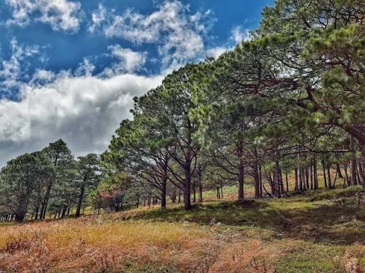

Tarlac is packed with destinations for every kind of traveler. Browse by category to find natural wonders, historic landmarks, sacred sites, scenic parks, river escapes, and mountain trails waiting to be explored across the province.
Explore by Category
- Natural Wonders: From the iconic Mt. Pinatubo Crater Lake to lahar plains, Tarlac's raw landscapes leave every visitor speechless.
- Heritage Sites: Discover museums and historical landmarks that tell the story of Tarlac and the heroes who shaped the Philippines.
- Religious Sites: Visit centuries-old churches, monasteries, and shrines that remain at the heart of Tarlac community life.
- Parks & Recreation: Relax and unwind in Tarlac's well-kept parks, gardens, and recreational areas perfect for families and groups.
- Rivers & Waterways: The rivers and waterways of Tarlac offer scenic beauty, freshwater fishing, and a glimpse into the province's agricultural soul.
- Mountain Trails: Lace up your boots and take on Tarlac's mountain trails for breathtaking views and an unforgettable outdoor adventure.